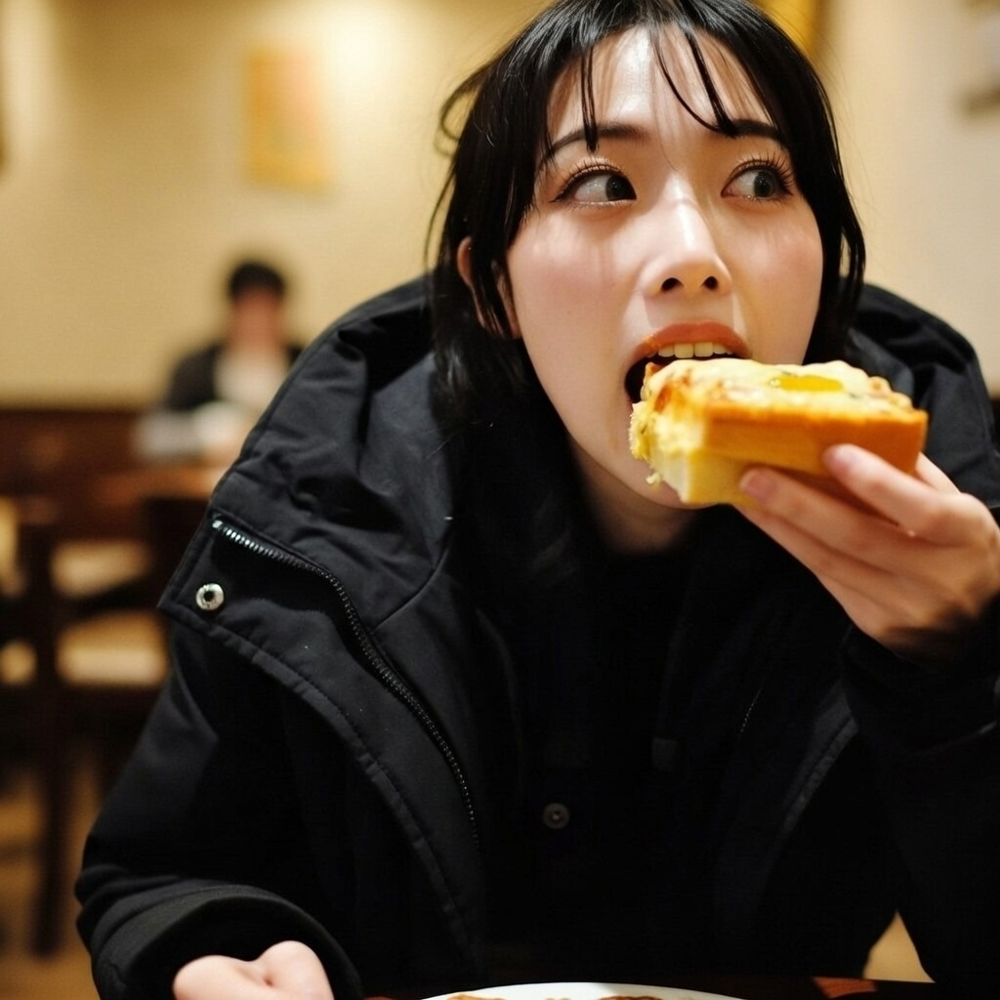

アップしちゃダメだから
店内は明るく、暖色の照明が天井から均一に落ちている。チェーン店らしい清潔さがあり、テーブルや椅子は軽く、簡単に動かせそうだった。ただ、入口の自動ドアが開閉するたび、外の冷気が薄い膜のように流れ込んできて、足元に溜まる。
彼女はテーブルをはさんで向かいに座っている。黒いコートは脱がないまま、前を少し開けている。運ばれてきたピザトーストから、わずかに焦げたチーズの匂いが立ち上る。両手で皿を押さえ、フォークを使わず、そのまま持ち上げる。

ひとくち目を頬張る直前で、彼女は少しだけ動きを止めた。口が開き、チーズが細く伸びている。そのまま写真を撮れば、いかにもSNS向きの瞬間だと思った。
「それ、アップしちゃダメだから」
そう言って、彼女は私を見ない。声は低くも高くもなく、店内のざわめきにすぐ溶けた。注意というより、決まり事を思い出させるような調子だった。
ピザトーストを噛むとき、彼女の頬がわずかに丸くなる。外から入り込んだ冷気が、テーブルの下で揺れている気がした。暖かさと寒さが混ざり合い、どちらにもなりきれないまま、その場に留まっていた。
写真はそれ以上撮らず、言葉もそれ以上増えない。彼女は何も言わず、黙々と食べ続けた。